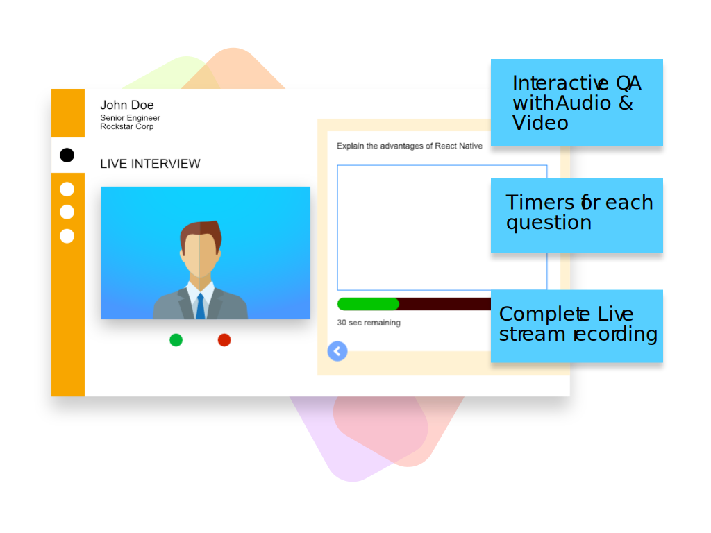

AUTOMATED BOT BASED INTERVIEW
Often, we require an interview solution which is free from logistical challenges like scheduling, follow ups yet provide full flexibility
of design the structure and remote proctoring.
Try FloCareer’s On Demand Interviews to automate your interviews fully. Your candidates can appear for the interview anywhere, anytime and
on any device. Get the interview report with video recording immediately on your system instantly.
Often, we require an interview solution which is free from logistical challenges such as scheduling and follow ups, yet provide full
flexibility of designing the structure as well as remote proctoring.Try FloCareer's On Demand Interviews to automate your interviews
completely. Your candidates can appear for the interview anywhere, anytime and on any device. Get the interview report with a video
recording on your system instantly.
Quick Feature List
- Video Enabled
- Customization Questions sets – MCQs, Descriptive, Coding, Scenario based etc
- Remote Proctoring
- Gamified Experience